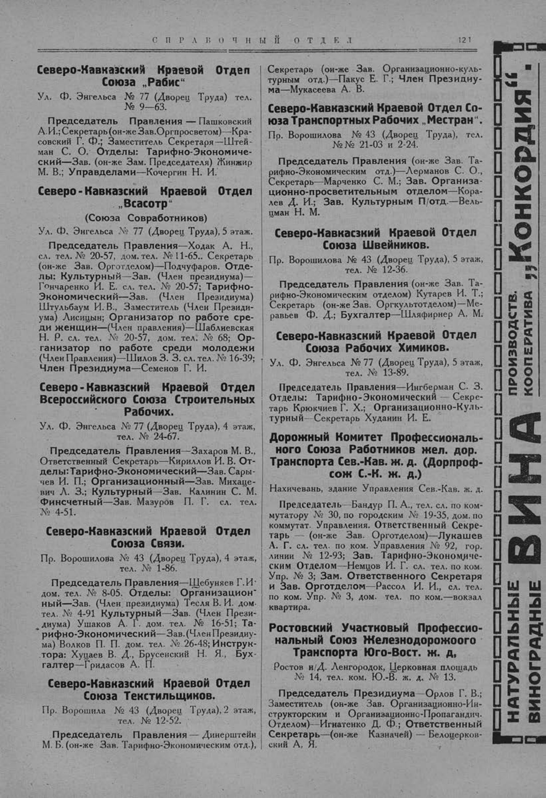

Лист источника 171
Скан

Распознанный текст
СПРАВОЧНЫЙ ОТДЕЛ 121
Северо-Кавказский Краевой Отдел
Союза „Рабис“
Ул. Ф. Энгельса № 77 (Дворец Труда) тел.
№ 9-63.
Председатель Правления — Пашковский
А. И.; Секретарь (он-же Зав. Оргпросветом) — Кра-
совский Г. Ф.; Заместитель Секретаря — Штей-
ман С. О. Отделы: Тарифно-Экономиче-
ский — Зав. (он-же Зам. Председателя) Жинжир
М. В.; Управделами — Кочергин Н. И.
Северо-Кавказский Краевой Отдел
„Всасотр“
(Союза Совработников)
Ул. Ф. Энгельса № 77 (Дворец Труда), 5 этаж.
Председатель Правления — Ходак А. Н.,
сл. тел. № 20-57, дом. тел. № 11-65. Секретарь
(он-же Зав. Орготделом) — Подчуфаров. Отде-
лы: Культурный — Зав. (Член президиума) —
Гончаренко И. Е. сл. тел. № 20-57; Тарифно-
Экономический — Зав. (Член Президиума)
Штульбаум И. В., Заместитель (Член Президи-
ума) Лисицын; Организатор по работе сре-
ди женщин — (Член правления) — Шаблиевская
Н. Р. сл. тел. № 20-57, дом. тел. № 68; Ор-
ганизатор по работе среди молодежи
(Член Правления) — Шилов З. З. сл. тел. № 16-39;
Член Президиума — Семенов Г. И.
Северо-Кавказский Краевой Отдел
Всероссийского Союза Строительных
Рабочих.
Ул. Ф. Энгельса № 77 (Дворец Труда), 4 этаж,
тел. № 24-67.
Председатель Правления — Захаров М. В.,
Ответственный Секретарь — Кириллов И. В. От-
делы: Тарифно-Экономический — Зав. Сары-
чев И. П.; Организационный — Зав. Михаце-
вич Л. З.; Культурный — Зав. Калинин С. М.
Финсчетный — Зав. Мазуров П. Г. сл. тел.
№ 4-51.
Северо-Кавказский Краевой Отдел
Союза Связи.
Пр. Ворошилова № 43 (Дворец Труда), 4 этаж,
тел. № 1-86.
Председатель Правления — Щебуняев Г. И.
дом. тел. № 8-05. Отделы: Организацион-
ный — Зав. (Член президиума) Тесля В. И. дом.
тел. № 4-91 Культурный — Зав. (Член Прези-
диума) Ушаков А. Г. дом. тел. № 16-51; Та-
рифно-Экономический — Зав. (Член Президиу-
ма) Волков П. П. дом. тел. № 26-48; Инструк-
тора: Хуцаев В. Д., Брусенский Н. Я., Бух-
галтер — Гридасов А. П.
Северо-Кавказский Краевой Отдел
Союза Текстильщиков.
Пр. Ворошила № 43 (Дворец Труда), 2 этаж,
тел. № 12-52.
Председатель Правления — Динерштейн
М. Б. (он-же Зав. Тарифно-Экономическим отд.),
Секретарь (он-же Зав. Организационно-куль-
турным отд.) — Пакус Е. Г.; Член Президиу-
ма — Мукасеева А. В.
Северо-Кавказский Краевой Отдел Со-
юза Транспортных Рабочих „Местран“.
Пр. Ворошилова № 43 (Дворец Труда), тел.
№ № 21-03 и 2-24.
Председатель Правления (он-же Зав. Та-
рифно-Экономическим отд.) — Лерманов С. О.,
Секретарь — Марченко С. М.; Зав. Организа-
ционно-просветительным отделом — Кора-
лев Д. И.; Зав. Культурным П/отд. — Вель-
цман Н. М.
Северо-Кавказский Краевой Отдел
Союза Швейников.
Пр. Ворошилова № 43 (Дворец Труда), 5 этаж,
тел. № 12-36.
Председатель Правления (он-же Зав. Та-
рифно-Экономическим отделом) Кутарев И. Т.;
Секретарь (он-же Зав. Оргкультотделом) — Ме-
равьев Ф. Д.; Бухгалтер — Шляфирнер А. М.
Северо-Кавказский Краевой Отдел
Союза Рабочих Химиков.
Ул. Ф. Энгельса № 77 (Дворец Труда), 5 этаж,
тел. № 13-89.
Председатель Правления — Ингберман С. З.
Отделы: Тарифно-Экономический — Секре-
тарь Крюкчиев Г. Х.; Организационно-Куль-
турный — Секретарь Худанин И. Е.
Дорожный Комитет Профессиональ-
ного Союза Работников жел. дор.
Транспорта Сев.-Кав. ж. д. (Дорпроф-
сож С.-К. ж. д.)
Нахичевань, здание Управления Сев.-Кав. ж. д.
Председатель — Бандур П. А., тел. сл. по ком-
мутатору № 30, по городским № 19-35, дом. по
коммутат. Управления. Ответственный Секре-
тарь — (он-же Зав. Орготделом) — Лукашев
А. Г. сл. тел. по ком. Управления № 92, гор.
линии № 12-93; Зав. Тарифно-Экономиче-
ским Отделом — Немцов И. Г. сл. тел. по ком.
Упр. № 3; Зам. Ответственного Секретаря
и Зав. Орготделом — Рассол И. И., сл. тел.
по ком. Упр. № 3, дом. тел. по ком. — вокзал
квартира.
Ростовский Участковый Профессио-
нальный Союз Железнодорожного
Транспорта Юго-Вост. ж. д.
Ростов н/Д. Ленгородок, Церковная площадь
№ 14, тел. ком. Ю.-В. ж. д. № 13.
Председатель Президиума — Орлов Г. В.;
Заместитель (он-же Зав. Организационно-Ин-
структорским и Организационно-Пропагандич.
Отделом) — Игнатенко Д. Ф.; Ответственный
Секретарь — (он-же Казначей) — Белоцерков-
ский А. Я.
ПРОИЗВОДСТВ.
КООПЕРАТИВА
„Конкордия“.
ВИНА
НАТУРАЛЬНЫЕ
ВИНОГРАДНЫЕ